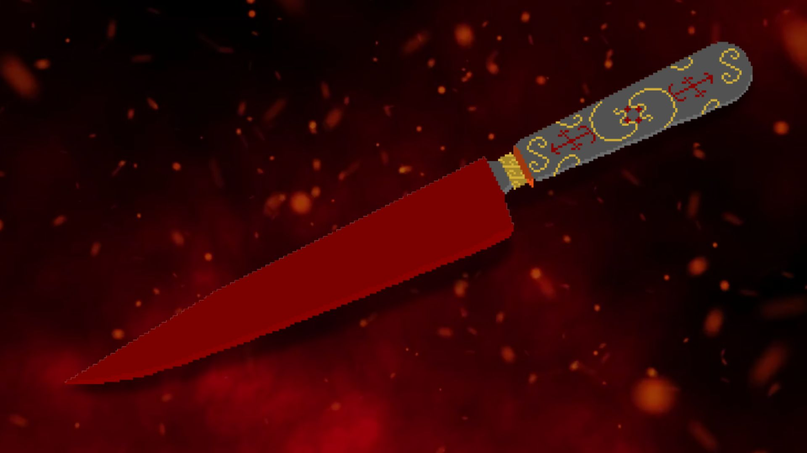
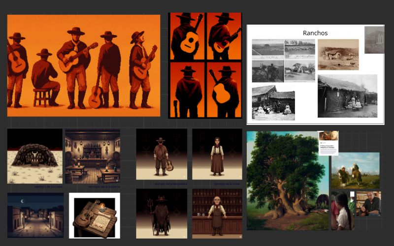
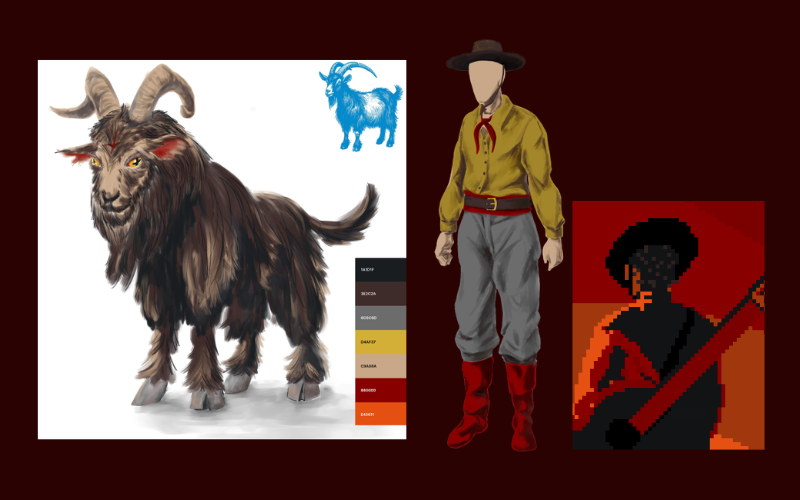
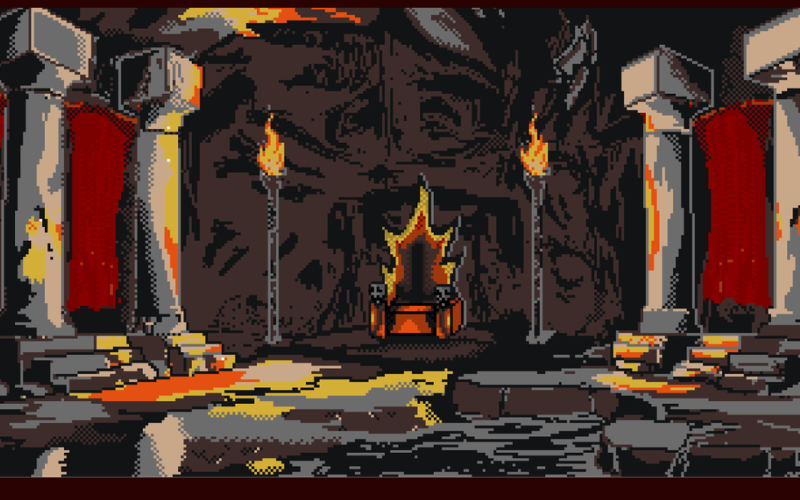

Una novela visual de suspenso folklórico argentino
"Sos un guitarrista venido a menos y en una cueva en la pampa, sellás un pacto con El Mandinga.
Tu voz hechizará a todos, pero cada decisión tiene consecuencias:
enfurecer al Mandinga o poner en riesgo a los demás...
¿vas a poder zafar de todos los mambos de los condenados sin que te cobren el alma? "
Cada elección que tomes afecta a los finales
Viví la leyenda de El Mandinga y La Salamanca como nunca antes


